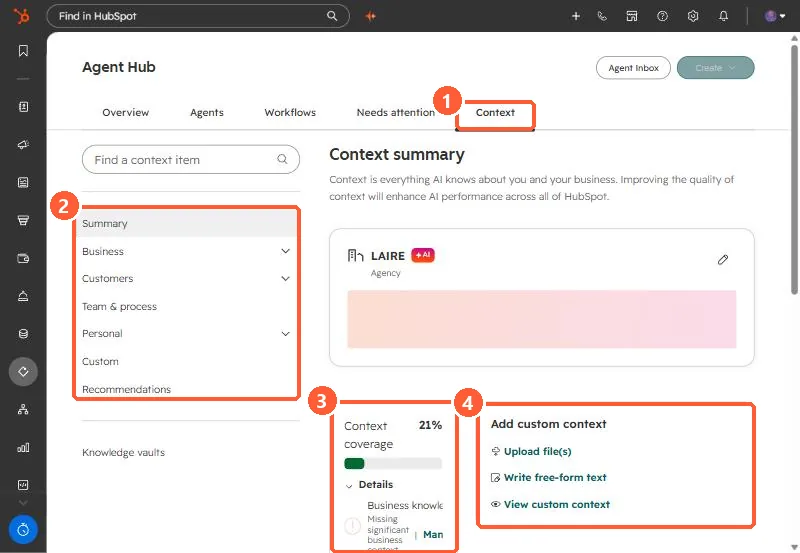

Short answer
Agents > Agent Hub > Context holds the business information HubSpot's AI tools apply across the account: brand kit, company identity, location, market, technology stack, and products and services. Knowledge vaults are separate sets of files and HubSpot content you attach to specific agents or projects. Review the context summary and fill gaps before relying on agent output.
1. The context summary
In my demo portal, the summary shows the company as an agency, a context coverage score of 21%, and options to add custom context.


2. Context or knowledge vault
- Context: broad, applies automatically across AI tools. Company messaging, tone, ICP, products.
- Knowledge vault: specific, added by hand to an agent or project. Product details, internal docs, support guidance.
3. What to fix first
Start with sections the coverage panel flags as missing, then the brand kit, since it sets voice and tone. Check what data AI tools can use in AI access settings.